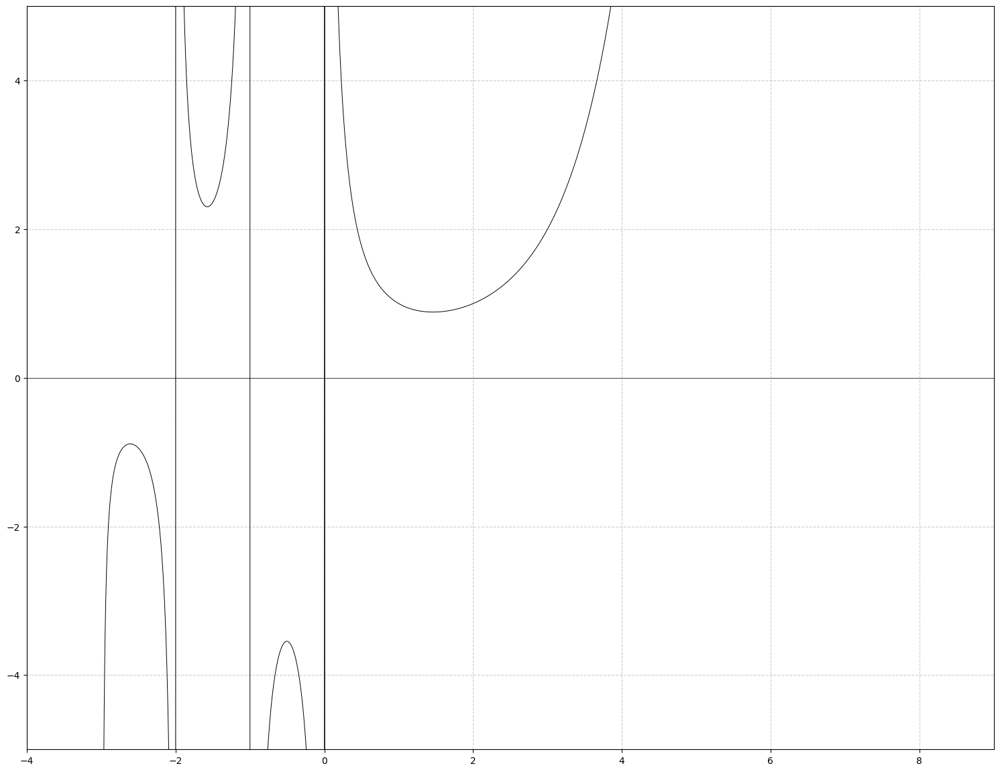
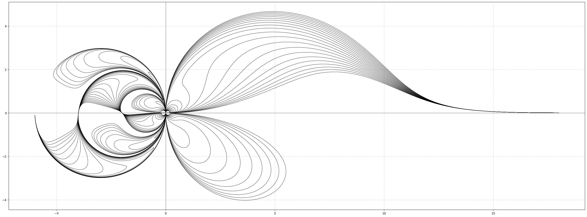
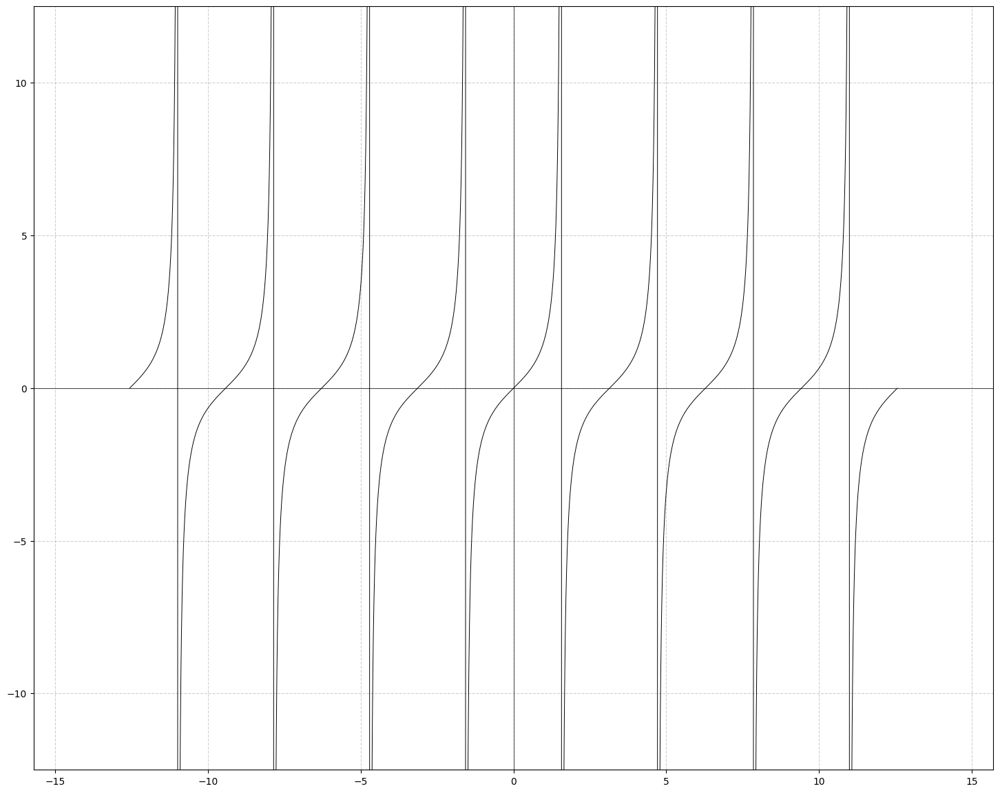

Coordenadas Circulares e Arte-Matemática.
Coordenadas Circulares foram definidas pela primeira vez em um livro chamado: The Mathematics Teacher, em 1971. Sua definição é a seguinte: "Consiste em dois eixos perpendiculares, chamados U e V. Cada ponto no eixo é o centro de uma circunferência que passa pela origem. O ponto (u, v) é definido como a interseção de uma circunferência centrada em u no eixo horizontal com outra centrada em v no eixo vertical." Este sistema de coordenadas pouco usual é bastante interessante, pois assíntotas verticais tornam-se pontos no eixo U. Neste notebook estão implementadas algumas funções e curvas neste sistema de coordenadas, as quais acredito que seus gráficos ficam interessantes. A mudança de coordenadas pode ser encontrado no artigo publicado por Elliot A. Tanis and Lee Kuivinen, chamado: Circular Coordinates and Computer Drawn Designs, publicado em: Mathematics Magazine, Vol. 52, No. 3 (May, 1979), pp. 175-178.
Por Gabriel Ribeiro - estudante de graduação em matemática pela UFMG - sob escopo do Projeto Visitas no Mundo da Matemática, 2025.
Copy to clipboard
from math import * import matplotlib.pyplot as plt from scipy.special import * px = 1/plt.rcParams['figure.dpi']
Função Gamma
A função Gamma é uma extensão do fatorial para números não naturais, com o argumento subtraído em 1.
Essa função pode ser estendida analiticamente a todos os números complexos de parte real positiva por meio da seguinte integral imprópria convergente:
A fução Gamma tem caráter extremamente assintótico verticalmente, isso quer dizer que, quando avaliada em uma certa vizinhança de seu domínio, ela varia muitíssimo, crescendo e decrescendo rapidamente. Isso pode ser verificado no gráfico que segue abaixo.
fig, ax = plt.subplots(figsize=(3440*px, 1440*px)) x = np.linspace(-2.999, 9, 2000000) ax.plot(x, gamma(x), color='black', linewidth=0.7) ax.set_ylim(-5, 5) ax.set_xlim(-4, 9) ax.set_aspect('equal', adjustable='box') ax.grid(True, linestyle='--', alpha=0.6) ax.axhline(0, color='black', linewidth=0.5) ax.axvline(0, color='black', linewidth=0.5) plt.show()

Em coordenadas esféricas, as assíntotas verticais desaparecem: tornam-se pontos no eixo horizontal. Abaixo, segue o gráfico de uma família de funções Gamma,
fig, ax = plt.subplots(figsize=(3440*px, 1440*px)) u = np.linspace(-2.999, 9, 2000000) for c in range(-10, 11): v = gamma(u) + c denominator = u**2 + v**2 s = (2 * u * (v**2)) / denominator t = (2 * (u**2) * v) / denominator ax.plot(s, t, color='black', linewidth=0.7) ax.set_aspect('equal', adjustable='box') ax.grid(True, linestyle='--', alpha=0.6) ax.axhline(0, color='black', linewidth=0.5) ax.axvline(0, color='black', linewidth=0.5) plt.show()

Função tangente
A função trigonométrica tangente também possui caráter assintótico em várias vizinhanças de seu domínio. Esta, definida por
fig, ax = plt.subplots(figsize=(3440 * px, 1440 * px)) u = np.linspace(-4 * pi, 4 * pi, 2000000) v = np.tan(u) ax.plot(u, v, color='black', linewidth=0.7) ax.set_ylim(-12.5, 12.5) ax.set_xlim(-5 * pi, 5 * pi) ax.set_aspect('equal', adjustable='box') ax.grid(True, linestyle='--', alpha=0.6) ax.axhline(0, color='black', linewidth=0.5) ax.axvline(0, color='black', linewidth=0.5) plt.show()

Analogamente, podemos evidenciar o desaparecimento das assintotas nesta plotagem de uma família de funções
fig, ax = plt.subplots(figsize=(3440*px, 1440*px)) u = np.linspace(-4* pi, 4 * pi, 2000000) for c in range(-10, 11): v = np.tan(u) + c denominator = u**2 + v**2 s = (2 * u * (v**2)) / denominator t = (2 * (u**2) * v) / denominator ax.plot(s, t, color='black', linewidth=0.7) ax.set_aspect('equal', adjustable='box') ax.grid(True, linestyle='--', alpha=0.6) ax.axhline(0, color='black', linewidth=0.5) ax.axvline(0, color='black', linewidth=0.5) plt.show()

A função afim
A função afim é muitas vezes considerada uma das funções mais simples, ela é definida da seguinte maneira:
Onde
Seu gráfico pode ser observado a seguir:
fig, ax = plt.subplots(figsize=(3440*px, 1440*px)) u = np.linspace(-9, 9, 200000) ax.plot(u, u, color='black', linewidth=0.7) ax.set_aspect('equal', adjustable='box') ax.grid(True, linestyle='--', alpha=0.6) ax.axhline(0, color='black', linewidth=0.5) ax.axvline(0, color='black', linewidth=0.5) plt.show()

Essa função não possui assíntotas verticais, no entanto, em coordenadas circulares, podemos observar que, exceto pela função
fig, ax = plt.subplots(figsize=(3440*px, 1440*px)) u = np.linspace(-9, 9, 200000) for c in range(-10, 11): v = u + c denominator = u**2 + v**2 s = (2 * u * (v**2)) / denominator t = (2 * (u**2) * v) / denominator ax.plot(s, t, color='black', linewidth=0.7) ax.set_aspect('equal', adjustable='box') ax.grid(True, linestyle='--', alpha=0.6) ax.axhline(0, color='black', linewidth=0.5) ax.axvline(0, color='black', linewidth=0.5) plt.show()

A Função Zeta de Riemann
A função zeta de Riemann, denotada por
Hoje conhecida como função zeta de Riemann. Há uma hipótese famosa, a qual nunca foi provada, conhecida como Hipótese de Riemann, de que os zeros não-triviais de
fig, ax = plt.subplots(figsize=(3440*px, 1440*px)) x = np.linspace(0, 50, 2000000) s = 0.5 + 1j * x # '1j' é como o Python representa a unidade imaginária 'i' z = zeta(s) ax.plot(z.real, z.imag, color='black', linewidth=0.7) ax.set_aspect('equal', adjustable='box') ax.set_ylim(-4, 4) ax.set_xlim(-2, 6) ax.grid(True, linestyle='--', alpha=0.6) ax.axhline(0, color='black', linewidth=0.5) ax.axvline(0, color='black', linewidth=0.5) plt.show()

Em coordenadas circulares acabamos com uma figura balanceada bastante interessante:
fig, ax = plt.subplots(figsize=(3440*px, 1440*px)) x = np.linspace(0, 500, 200000) s = 0.5 + 1j * x for c in range(-10, 11): z = zeta(s) + c u = z.real v = z.imag denominator = u**2 + v**2 s = (2 * u * (v**2)) / denominator t = (2 * (u**2) * v) / denominator ax.plot(s, t, color='black', linewidth=0.7) ax.set_aspect('equal', adjustable='box') ax.grid(True, linestyle='--', alpha=0.6) ax.axhline(0, color='black', linewidth=0.5) ax.axvline(0, color='black', linewidth=0.5) plt.show()

A Espiral Áurea
O dito Número de Ouro,
O valor da constante também pode ser obtido resolvendo a equação quadrática:
Seu valor irracional é:
Com isso, podemos produzir a Espiral Áurea: ela é uma espiral logarítmica
phi = (1 + np.sqrt(5)) / 2 b = (2 * np.log(phi)) / np.pi # 'a' é um fator de escala inicial da espiral. a = 0.2 theta = np.linspace(0, 8 * np.pi, 800) r = a * np.exp(b * theta) # Convertendo de coordenadas polares (r, theta) para cartesianas (x, y) para o plot. x = r * np.cos(theta) y = r * np.sin(theta) fig, ax = plt.subplots(figsize=(3440 * px, 1440 * px)) # Plotamos os pontos (x, y) para desenhar a espiral. ax.plot(x, y, color='black', linewidth=2.5) ax.set_aspect('equal') plt.show()

Com isso, vamos produzir uma família de 20 espirais áureas rotacionadas.
phi = (1 + np.sqrt(5)) / 2 k = (2 * np.log(phi)) / np.pi a = 0.02 theta = np.linspace(0, 8 * np.pi, 2000000) fig, ax = plt.subplots(figsize=(3440*px, 1440*px)) num_spirals = 20 for i in range(num_spirals): rotation_offset = (2 * np.pi / num_spirals) * i u = a * np.exp(k * theta) * np.cos(theta + rotation_offset) v = a * np.exp(k * theta) * np.sin(theta + rotation_offset) denominator = u**2 + v**2 s = (2 * u * (v**2)) / denominator t = (2 * (u**2) * v) / denominator ax.plot(s, t, color='black', linewidth=0.8) ax.set_aspect('equal', adjustable='box') plt.show()

E aqui chegamos ao fim! As coordenadas circulares nos ajudam a visualizar funções de uma maneira não-usual, permitindo-nos gerar belíssimas imagens com curvas suaves, verdadeiras artes matemáticas! Você pode utilizar deste notebook e dos materiais citados nas células anteriores para implementar suas próprias curvas e enviar para projetovisitas@gmail.com, vamos adorar ver suas criações.
Att, Gabriel Ribeiro.